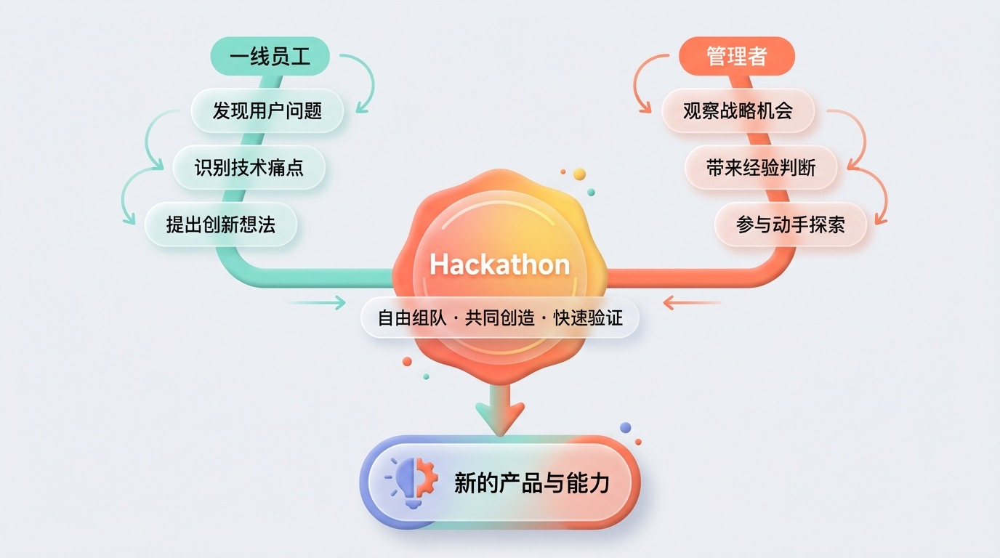
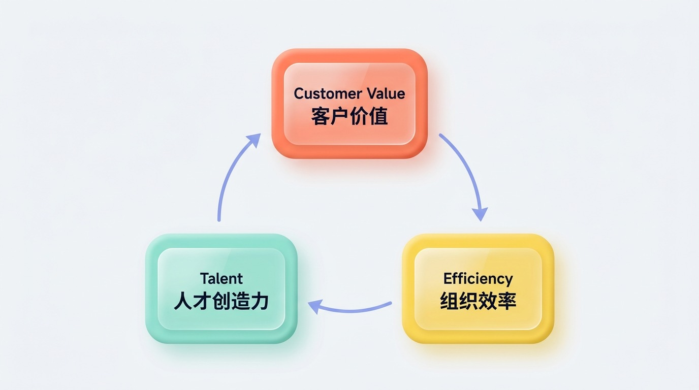
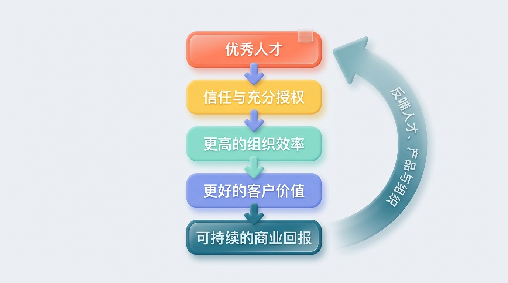
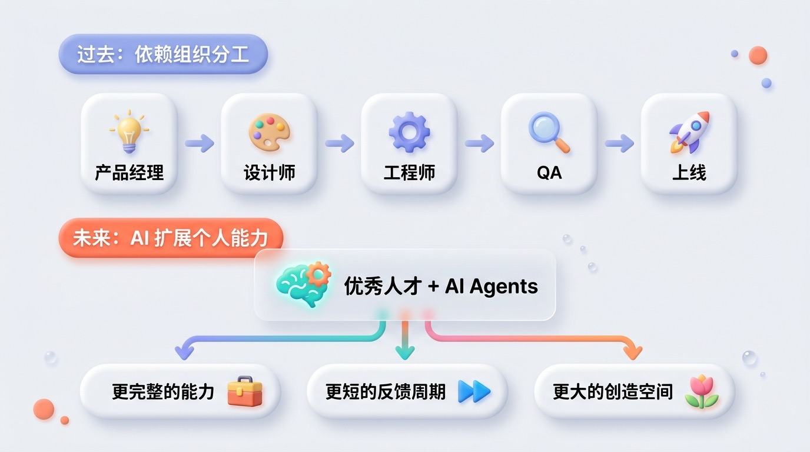
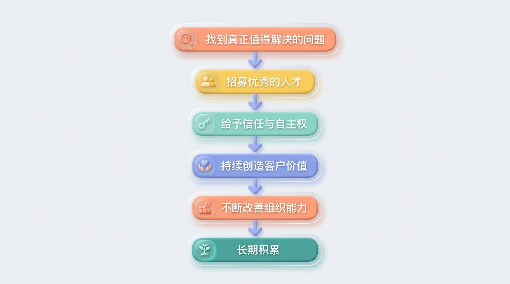

静水流深：我理想中的公司
Contents
这些年，我有幸在两家文化和背景都很不一样的公司工作过。
研究生毕业后，我加入了美团，从 2010 年底到 2016 年，经历了它从初创公司到逐渐成长为行业领先企业的过程。之后，我加入了 Tubi，在这里工作了很多年，也经历了中国工程团队从最初几个人发展到一百多人的过程。
这两段经历几乎代表了两种不同的组织文化和经营环境：美团让我看到了中国互联网创业公司在激烈竞争中如何建立商业模式、打磨产品和提升经营效率，Tubi 则让我体验了硅谷公司如何通过信任、透明和授权，让不同背景的人发挥自己的创造力。
当然，两家公司都远比几个关键词复杂，我也并不认为它们的经验可以被简单复制。但这些年的经历确实让我逐渐形成了一些自己的判断。
最近我开始认真考虑下一阶段的职业选择，也因此反复思考一个问题：如果有一天，我有机会参与创建一家自己的公司，我希望它是一家什么样的公司？ 过去十几年的两段经历，多少都在回答这个问题。
我想了很久，越来越倾向于一个简单的答案：
一家不靠消耗员工来获得增长，而是通过持续创造客户价值、不断提升组织效率和释放人才创造力来获得成功的公司。
我把它称为：静水流深。
1. 美团教会我的：把事情做对，然后把事情做好
在美团的那几年，正好赶上中国互联网团购行业最激烈的竞争时期：Groupon 的模式被引入中国，市场上出现了成百上千家团购网站，大家都在争夺用户、商户和市场份额，广告大战、价格战、地推大战，几乎每天都有新的竞争者出现。
那是一段非常疯狂的时期。
现在回头看，当时很多公司的经营策略其实都围绕着一个问题：如何更快地扩大规模，如何在竞争对手之前占领市场。
但让我印象深刻的是，美团并没有把所有精力都放在如何跑得更快、烧更多钱、抢更多市场上。当然，增长和竞争同样重要，但在很多竞争对手忙着扩张的时候，美团也在持续投入研发，改善内部系统和业务流程。
例如：
- 优化订单流转效率，让交易链路更加顺畅；
- 提升交易质量，减少用户和商户在履约过程中的问题；
- 改善用户体验，推出过期退这样的消费者友好机制；
- 持续完善支撑业务运转的技术系统，让现在的人能做更多的事情。
这些事情表面上看是产品和技术上的改进，背后其实是一种经营选择：愿意为长期的客户信任，承担眼前的成本和复杂度。
这个选择当时并不轻松。王兴和管理层是顶着很大压力在做这件事的，内部很多 BD 在员工会上多次质疑领导层的判断。好在老板们坚持了下来，后来大家也慢慢回过味儿来了。
我当时逐渐意识到，商业竞争并不只有一种方式。
| 以短期扩张为中心 | 以长期能力为中心 |
|---|---|
| 争夺流量和市场份额 | 提升产品和服务质量 |
| 依赖资本和广告投入 | 持续投入技术和系统能力 |
| 追求短期增长速度 | 积累长期客户信任 |
| 关注竞争对手做什么 | 关注客户真正需要什么 |
| 通过增加人力推动规模 | 通过系统改善提升效率 |
这并不是说前一种方式一定不好：创业公司需要生存，市场竞争也确实有它的残酷性，在某些阶段，速度甚至决定了企业能不能活下来。
但我觉得值得思考的是：当所有人都在追求速度的时候，企业是否还记得自己究竟在为什么而竞争？
如果一个团购平台只是比竞争对手多买了一些广告、多招了一些地推人员，那么这些优势可能随着资本投入的变化而消失。
但如果它能让消费者获得更好的交易体验，让商户经营得更顺畅，让一笔订单从产生到履约的整个过程更加可靠，那么它积累的就是更难被复制的能力。
这让我逐渐理解了一个道理：
效率不是让每个人跑得更快，而是让整个系统以更低的成本、更好的质量，持续创造更多价值。
一家公司真正的竞争优势，可能并不是某个阶段抢到了多少市场，而是它有没有能力持续改善自己的产品、服务和经营系统。
这也是美团留给我的一个重要启发：不要让竞争对手决定自己的经营节奏，找到真正值得投入的事情，然后持续把它做好。
2. Tubi 教会我的：释放人的创造力
如果说美团让我理解了如何通过改善系统提升效率，那么 Tubi 则让我看到了另一种非常有价值的东西：
如何通过组织文化，让每个人发挥更大的创造力。
Tubi 是一家典型的硅谷风格的公司，我非常喜欢这里的文化，尤其是 Trust、Empowerment 和 Transparency。刚加入的时候，我就感受到这里和很多传统组织不太一样：公司有相对扁平的组织结构，信息非常透明，员工能够了解公司的经营数据、战略方向和团队目标，也有很多机会直接与不同层级的管理者交流。
公司的目标和业务进展会通过各种会议同步，管理层也会定期与不同层级的员工进行跨层级的一对一沟通。
这种透明其实不是多开几场会议，而是让员工能够理解自己正在参与的事情为什么重要，以及自己的工作和公司的整体目标有什么关系。
还有一个我印象很深的地方：在我待过的团队里，个人 KPI 并不是主要的考核方式，公司不会给每个人分一堆数字，让大家围着自己的指标转；管理者更多是帮助团队明确方向、提供资源、解决障碍，而不是事无巨细地安排每个人应该做什么。
这种文化让我感受到，员工不是一个等待分配任务的执行单元，而是一个有能力独立思考、主动发现问题并创造价值的人。
Hackathon：让不同层级的人一起创造
其中，我特别喜欢 Tubi 每半年举办一次的 Hackathon。
Hackathon 本身并不稀奇，很多科技公司都有类似活动，但 Tubi 的一个特点是，公司管理层非常重视它，而且参与者不仅是一线员工，还有很多中高层管理者。
大家可以自由组队，围绕自己在工作中发现的问题和机会，提出想法、动手探索。
这不是一次自上而下的任务分配，也不是一次自下而上的创意征集，而是不同层级的人真正参与到同一个创造过程中。

Tubi 的 Hackathon（示意图）：不是自上而下派活，也不是自下而上征集，而是两边一起走进去我们内部有一个文化叫 Swing Big，鼓励大家大胆思考，不要局限于眼前的需求和已有的解决方案。
很多有价值的项目都在这样的文化中孕育，例如我们去年探索的 Tubi Foundation Model，尝试利用大模型理解用户的观看内容，改善内容推荐。这个项目在内部实验中取得了非常好的成绩，多个实验指标刷新了历史纪录。另外，Tubi Mixtape 这些用户侧功能，也体现了这种创新文化带来的成果。
我觉得 Hackathon 最有意思的地方，其实并不只是它能产生多少个好点子，而是它改变了组织中不同角色之间的关系。
传统组织里，创新往往有一条很清晰的链路：
管理层提出方向 → 产品定义需求 → 工程师负责实现 → 管理层评估结果。
这套模式在很多情况下是必要的，但它也容易形成一个隐含假设：管理者负责思考，一线员工负责执行。
在 Tubi 的 Hackathon 中，管理者也会走进创造过程，一线员工也有机会参与更大的产品和业务讨论，管理者不只是最后的评委，而是创造过程中的参与者。
这背后其实是一种双向的组织设计：
- 一线员工能够把最接近用户和技术的问题带进来；
- 管理者能够把更大的业务视角、经验和资源带进来；
- 不同层级的人在共同创造中互相理解，而不是只通过汇报和审批发生关系。
我觉得这比简单地说“充分授权”更进一步：授权意味着管理者把一部分决策权交给员工，共同创造则意味着管理者也愿意进入创造过程，成为团队中的一员。
真正的扁平化，不是消除管理层和员工之间的层级，而是让不同层级的人能够围绕共同目标，平等地贡献自己的想法和能力。
透明和信任，是创造力的基础设施
回头看，Hackathon 并不是一个孤立的活动。
如果员工不了解公司的方向和经营情况，不知道自己做的事情与公司目标有什么关系，那么即使给他们几天时间自由发挥，也很难产生真正有价值的创新。
如果员工提出一个想法，首先想到的是它是否符合老板的偏好、会不会影响自己的绩效，那么他们自然也不会愿意冒险。
所以，我觉得 Tubi 的透明、信任、扁平化和 Swing Big，其实是相互关联的一套组织机制。
信息透明 → 理解共同目标 → 获得充分信任 → 拥有自主空间 → 主动发现和创造 → 组织持续创新。
透明让人知道为什么做，信任让人敢于去做，授权让人能够去做，而共同创造则让不同层级的人能够一起把事情做成。
这也是我在 Tubi 最珍惜的一种工作体验：不需要所有事情都等着管理者安排，每个人都有机会成为价值创造的发起者。
3. 信任不是放任，自治也需要责任
当然，这种文化并不是没有代价：在一个相对宽松、充分授权的环境中，并不是所有人都能很好地管理自己。
有些人会因为获得更多自主权而表现得更加主动，承担更大的责任；但也有一些人可能逐渐失去方向，甚至开始降低对自己的要求。
当组织缺少足够的过程监督时，这些问题有时并不容易被及时发现。
我也观察到，有些人在这样的环境里的确会逐渐减少投入，觉得自己的工作状态不容易被发现；管理层需要保持警惕，也会定期审视团队的贡献情况，处理长期缺乏产出的情况。
这让我意识到，充分信任大概并不意味着所有人都会自动变得优秀，一个组织的文化，最终还是要建立在人的自驱力和责任感之上。
所以我倒是不认为信任意味着放任，也不认为扁平化意味着不需要管理，一个真正健康的组织，需要在自主性和责任之间找到平衡。
我越来越倾向于这样一种管理方式：
| 应该减少的 | 应该坚持的 |
|---|---|
| 繁琐的过程控制 | 清晰的目标 |
| 统一的工作方式 | 对结果负责 |
| 对失败的简单惩罚 | 从失败中学习 |
| 个人 KPI 至上 | 持续反馈和公平评价 |
| 层层审批 | 及时处理长期缺乏贡献的情况 |
我很喜欢 Just Culture 这个概念：它并不是说所有错误都可以被接受，而是区分诚实的失误、系统性问题和不负责任的行为，我们应该努力改善系统，而不是简单地寻找一个人来承担责任。
这里面其实有一个很重要的区别：
- 一个员工尝试新的方案，结果没有达到预期，这是创新过程中可能出现的正常失败；
- 一个员工因为系统设计不合理而反复犯错，应该先考虑如何改善系统；
- 一个员工明明知道自己的责任，却长期不愿意承担，这是另一类问题。
如果把这三种情况都简单归结为“没有做好工作”，组织就会逐渐失去创新能力，因为当员工发现每一次失败都可能带来惩罚时，最安全的选择就是只做那些已经被证明可行的事情。
但另一方面，如果一个组织只有信任，却没有责任边界，那么真正努力创造价值的人也会逐渐失去动力。
所以我更认同这样一个原则：
信任应该是组织的默认设置，但责任和结果不能因此变得模糊。
好的管理不是让所有人都处于被监督的状态，而是让每个人知道自己的目标、拥有完成目标的自主权，并且愿意为结果负责。
说到责任，还有一件更难的事：及时止损。
几年前我写过一篇《Fire Fast》，讲的是 Hire slow, fire fast 的后半句。判断标准大致两条：不达预期是长期性的、短期很难改观，或者触碰了团队红线，比如在靠自驱运转的团队里长期划水，提醒过也不见改正。满足其中一条，就该早做决断。
难的是决心，常见的心态是「他沟通还可以」「催一催也能出活」，于是一拖再拖。但代价由整个团队来付：一旦别人认出了这位同事的状态，就会开始怀疑这个团队是不是还健康，高绩效的人离开只是时间问题。所以所谓高人才密度，不只是把优秀的人招进来，也包括让不合适的人及时离开。
4. 我理想中的公司：客户价值、人才创造力和组织效率
经历了美团和 Tubi，我发现自己越来越认同这样一种经营理念：一家公司的成功，应该来自它持续为客户创造价值的能力，以及它不断改善自身生产系统的能力。
如果要把它总结成一个简单的模型，我会选择三个要素：

客户价值、人才创造力、组织效率，一个都少不了，而且互为因果这三个要素并不是相互独立的：优秀的人才带来更好的判断和创造力，好的组织设计让这些创造力得到充分发挥，更高的组织效率最终转化为更好的产品和客户体验；客户价值带来的商业回报，又可以反过来投入人才、产品和组织建设。我希望形成的是这样一个飞轮：

我希望跑起来的飞轮：人才 → 授权 → 效率 → 价值 → 回报，再回到人才这个模型里，我想特别强调三个方面。
客户价值：真正解决问题，而不是制造需求
我一直觉得，企业经营最根本的问题其实很简单：
客户为什么需要你？
不是为了短期收入牺牲客户体验，也不是为了追逐竞争对手而不断改变自己的方向。
企业不妨认真想想：
- 自己究竟为客户解决了什么问题？
- 客户为什么愿意持续使用和付费？
- 我们有没有在不断改善客户获得的价值？
- 如果没有营销和补贴，客户是否依然愿意选择我们？
前面提到的「过期退」就是一个具体做法：用户买了没消费的钱可以退，平台当时少赚了一些，换回来的是用户下次还愿意来。这种选择说起来不复杂，难的是在所有人都在抢增长的时候还愿意这么做。
我其实并不反对营销，也不反对商业模式创新，但如果一家企业必须不断依赖补贴、流量购买或信息不对称才能维持增长，就值得认真审视它创造的价值究竟有多大。
好的商业模式，应该让客户在持续使用产品的过程中，越来越认可它的价值。
企业的收入是客户价值的一种结果，而不应该成为唯一的目标。
人才创造力：让聪明的人做聪明的事
尤其对于软件和技术公司来说，人才是最重要的生产力，优秀的工程师不只是负责实现需求，他们同样能够发现问题、定义问题，甚至创造新的产品机会。
很多时候，接近问题的人比管理者更清楚问题在哪里，也更容易发现改进的机会，如果组织把所有思考和决策都集中在少数管理者手中，就很容易形成瓶颈。
管理者的精力有限，信息也不可能覆盖所有细节。随着组织规模扩大，层层传递的信息还可能不断失真。
所以，公司应该尽可能减少不必要的管理和沟通成本，让最接近问题的人拥有足够的信息、资源和决策权。
与其不断要求员工更加努力，不如认真思考如何让他们的聪明才智得到更好的发挥。
我很喜欢一个简单的对比：
管理者不应该成为组织中最忙碌的人，而应该让组织中更多的人有能力独立解决问题。
这并不意味着管理者不重要，恰恰相反，管理者需要做更难的事情：明确方向、建立机制、培养人才、解决跨团队障碍，并让组织整体变得更强。
组织效率：改善系统，而不是压榨个体
组织效率不是让每个人工作更长时间，也不是让管理者安排更多任务，真正的效率来自：
- 更好的系统和工具；
- 更合理的流程；
- 更清晰的协作方式；
- 更高质量的决策；
- 更少的无效沟通和内部摩擦。
我越来越觉得，组织效率和个人效率是两个完全不同的概念：一个团队里，每个人都很忙，每个人的 KPI 也都完成了，但如果大家在重复建设、相互等待、争夺资源，甚至为了证明自己的价值而制造更多工作，那么这个组织的整体效率可能并不高。
反过来，一个优秀的团队可能看起来并没有那么忙碌，但因为信息流动顺畅、决策链路短、工具和流程完善，能够以更少的投入创造更大的价值。
这也是我为什么不太喜欢把“员工工作时间”和“组织产出”简单地画等号。
企业真正应该优化的是价值创造的系统，而不是单纯压缩人的时间。
5. AI 时代，人才赋能可能成为更重要的竞争优势
随着 AI 能力不断提升，我越来越倾向于一个判断：能够真正赋能人才的团队，可能会比传统组织拿到更大的竞争优势。这个判断可能不完全正确，但是我觉得它的推导过程很有意思。
先看 AI 到底改变了什么。过去，一家公司的生产能力，很大程度上取决于它拥有多少专业人才，以及如何通过组织分工把这些人连接起来：一个产品从想法到上线，要先由产品经理定义需求，设计师完成设计，工程师负责开发，QA 进行测试，中间还隔着好几轮评审和协调。
这种专业分工有它的合理性，复杂的软件系统需要专业知识，也需要多人协作。但它同时也意味着，组织必须付出大量成本去协调不同角色之间的信息、任务和依赖关系，企业越往上走，部门、层级和协调机制就越多，协调本身开始变成一种负担。
AI 正在改变这个局面：今天，一个工程师借助 Coding Agent，已经可以独立完成过去需要多个角色协作才能完成的工作；一个产品经理也可以借助 AI 快速做原型、验证想法，甚至直接实现一个简单的功能。

过去是一条串行的分工链，未来可能收进一个人和几个 Agent 里这并不意味着专业分工会消失，也不意味着一个人就能取代所有团队，复杂系统仍然需要专业知识、工程质量和协作治理。
但组织的能力边界确实在变：过去一个人的想法要经过需求评审、资源申请、排期、跨团队协调，才有机会变成现实；未来一个有想法、有判断力的人，可能借助 AI 在很短的时间里做出原型、验证假设，甚至交付一个能用的产品。
想法到结果之间的距离正在缩短。
这也让我重新去想管理和组织的价值：如果 AI 已经能承担越来越多的执行工作，管理者还需要把大量精力放在分配任务、跟踪进度、协调执行细节上吗？我觉得未来优秀组织的核心能力，可能不再是能管多少人，而是能让多少优秀的人把自己的能力充分发挥出来。
这些变化，我大致归纳成三条。
第一，人才密度可能比组织规模更重要。 过去企业习惯用增加员工数量来扩大产能，但在 AI 时代，一个人的能力边界可能被大幅拓展，一个由优秀人才组成的小团队，借助 AI，可能比一个规模更大、协作效率却更低的组织创造更多价值。招聘的重点大概也会跟着变：除了补岗位，更要看人的学习能力、判断力、主动性和跨领域解决问题的能力。
第二，组织应该从任务分配转向能力赋能。 当 AI 能替员工承担更多执行工作时，管理者的价值应该更多体现在明确方向、提供上下文、划定边界、培养人才和解决组织障碍上。与其告诉员工每一步怎么做，不如让他们理解目标，拿到足够的信息和工具，自己找到最好的实现方式。这其实和我在 Tubi 体验到的文化很契合：透明让员工理解方向，信任让员工敢于尝试，授权让员工能够行动，而 AI 进一步扩大了他们能独立完成的事情。
第三，组织需要鼓励跨职能的创造，别让岗位边界挡住人。 AI 让不同专业领域之间的距离变短，工程师可以更深入地参与产品定义，产品经理可以更直接地验证技术方案，设计师也可以借助 AI 做出交互原型。我不是说每个人都要成为全栈专家，组织也不该因为传统的岗位边界，限制员工主动解决问题。
AI 本身会越来越普及，工具和模型也会逐渐趋同，真正拉开差距的，大概是哪家组织能让优秀的人把这些工具用出更大的价值，而不是谁买了更多 AI 工具。
换句话说：
AI 放大的是个人能力，而组织决定了这些能力能否被充分释放。
一个组织如果依然依赖层层审批、严格按职能划界、自上而下分派任务，就算上了最先进的 AI 工具，也未必能拿到最大收益。
反过来，一个信任人才、鼓励主动创造、信息透明、协作高效的组织，可能会更快地把 AI 的能力变成实际的商业价值。我对未来公司形态最期待的地方也在这里：用 AI 让每个人都拥有更大的创造空间，而不是把人变得更忙。
6. 好公司应该让参与价值创造的人共同受益
说到组织，我还想到胖东来、信誉楼、山姆这几个中国和海外的企业。
它们所处的行业和经营模式并不相同，但都有一个值得研究的地方：不仅关注如何服务客户，也非常重视员工在企业中的价值和长期发展。我尤其欣赏这种让员工成为企业价值共同创造者，而不只是劳动投入者的思路。
这条路并不只有零售业在走。软件行业的帆软把「永不上市，利润共享」贴在墙上，用一套叫「共利金」的制度让核心员工参与利润分配，2024 年营收 15.7 亿元。
制造业里的做法更直接。舜宇光学 1994 年股份制改造时，创始人王文鉴把集体资产量化给当年在册的 350 名员工，自己只留 6.8% 的股份，信的是「钱聚人散，钱散人聚」。
做吸管的双童走得更远，每年把三分之二的利润分给员工，创始人楼仲平的说法是「把员工当人，不要把员工当成会说话的机器」。
这样的公司不止一家，还有干脆不上市、不借钱，赚多少分多少的。路径不同，落点却一致：在产权和分配上真正让出去一部分。
很多公司也讲 Ownership，但有时候所谓的 Ownership，只意味着员工需要承担更多责任、完成更多目标，却不一定能够分享自己创造的价值。
我觉得真正的 Ownership 应该包含三个部分：
| 维度 | 意味着什么 |
|---|---|
| 决策权 | 能够决定如何完成目标 |
| 责任 | 对自己的选择和结果负责 |
| 收益权 | 能够合理分享自己创造的价值 |
这三样应该尽可能统一。如果企业希望员工像主人一样思考，就不能只要求他们承担主人的责任，却不给予相应的自主权和回报。
双童后来还往前走了一步：把生产和销售拆成一个个自负盈亏的创业体，让员工从分利润的人变成自己经营的人。收益权和决策权一起下放，责任也跟着落到了他们身上。
当然，这并不意味着每个人都必须拥有公司的股份，也不意味着所有人都应该获得完全相同的收益。
不同岗位、不同贡献、不同风险承担程度，理应有不同的回报方式。
但企业至少应该认真思考：如何让那些推动公司长期发展的员工，能够分享公司成长的成果？
这也让我想到一个更深层的问题：企业究竟是由资本拥有的资产，还是由一群人共同创造价值的组织？
从法律和产权的角度看，答案很明确；但从经营的角度，我更愿意把它理解为一个共同创造价值的系统：资本提供启动条件，人才提供创造力，客户提供价值验证，组织负责把这些要素连接起来。
不过，让参与创造的人共同受益还有个前提，就是别把大家变成彼此的对手。
我并不是反对竞争，也不是认为企业应该放弃增长，更不是希望建立一个没有压力、没有绩效要求的理想国。企业需要生存，需要增长，需要面对竞争，也需要在很多时候做出艰难的选择。
我真正不认同的，是把竞争压力不断转嫁到组织内部，让员工之间相互消耗，并把这种消耗误认为效率。企业之间当然需要竞争，但组织内部不应该把所有人都变成竞争对手：一个公司的员工如果只能靠隐藏信息、争夺资源、证明别人不如自己来获得机会，组织的能量就会大量消耗在内部博弈上。
这并不是说组织内部不需要竞争，合理的绩效评价和人才流动当然必要，但我更希望看到的是：
- 团队之间共享知识，而不是建立信息壁垒；
- 员工愿意主动帮助别的团队，不只盯着自己的指标；
- 管理者鼓励不同观点，不要求所有人认同自己；
- 优秀的人通过创造更大价值获得发展，而不是通过消耗同事获得优势。
竞争应该推动企业不断变好，而不是让组织内部的人彼此消耗。同样，长期主义也不等于慢：如果一件事情值得做，就应该尽可能高效地做好，该投入的时候投入，该做决策的时候做决策，该停止的时候及时停止。
长期主义不是不看短期结果，而是不为了短期结果牺牲长期能力。
7. 静水流深
老实说，我并不认为上面这些理念有什么特别新颖的地方：信任、透明、授权、长期主义、客户第一，这些词大家都听过，真正困难的是让它们成为企业日常经营的一部分，而不是挂在墙上的价值观。
尤其在中国这样竞争激烈的商业环境下，坚持这些理念可能并不容易，很多时候短期的生存压力和长期的组织建设是冲突的，取舍很难。我也不确定，一家以这些理念为基础的公司，是否一定能够取得商业上的成功，美团和 Tubi 的经验也不可能直接复制到另一家企业。
但我越来越相信，企业不一定要通过不断增加管理层级、延长工作时间、制造内部竞争来提高效率。
也许还有另一种可能：

找到值得解决的问题，然后一步步往下走不追逐每一个风口，不参与每一场竞争，不为了短期增长牺牲长期能力。
把产品做好，把技术做好，把服务做好，把组织也做好。让客户信任，让员工自豪，让合作伙伴受益。
如果未来有机会参与创建这样一家公司，我希望它不一定很大，也不一定增长最快，但能够成为一家真正值得长期投入的企业。
我也希望加入进来的人，不是因为福利好、薪水高或者名头响，而是认同我们在做的事，相信自己能在这里创造价值。
我也希望多年以后，当大家回头看这段经历时，除了公司的商业成绩，还会觉得：
我们曾经一起做过一些真正有价值的事情，也一起建立了一家值得骄傲的公司。
静水流深。
慢慢积累，持续进化。
参考资料
Author: Chun Shang
Link: https://springuper.github.io/still-water-deep/
License: 知识共享署名-非商业性使用 4.0 国际许可协议